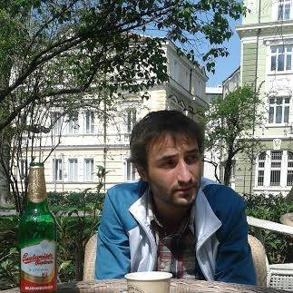

Curriculum Vitae
15th may, 2016
Personal detail
Education
Professional experience
Skills
Hobbies
Personal detail

Name:
Vladimir Cvetanov Trifonov
Adress:
Stefan Stoshev 66b, Sofia, Bulagaria
E-mail:
Vladimirtrifonov14@gmail.com
Phone:
0888248030
Data of Birth:
14/03/1988
Education
Highschool
Sofia private english language school
time
start: 2002
finish: 2006
University
University of National and World Economy sofia
"http://www.unwe.bg/en/"
in Economics Bachelor's degree
time
start: 2006
finish: 2011
Professional experience
Ministry of regional development and infrastructure of Bulgaria
department: Budget and finance analysis
time
start: 2012
finish: 2014
Skills
Languages
English:
Advanced level
Russian:
Novice level
Bulagarian:
Superior level
Softwares
Windows-ofice pack
Adobe Photoshop
Hobbies
Sport:
snowboarding, football
Various:
Cinema, music, sport, reading